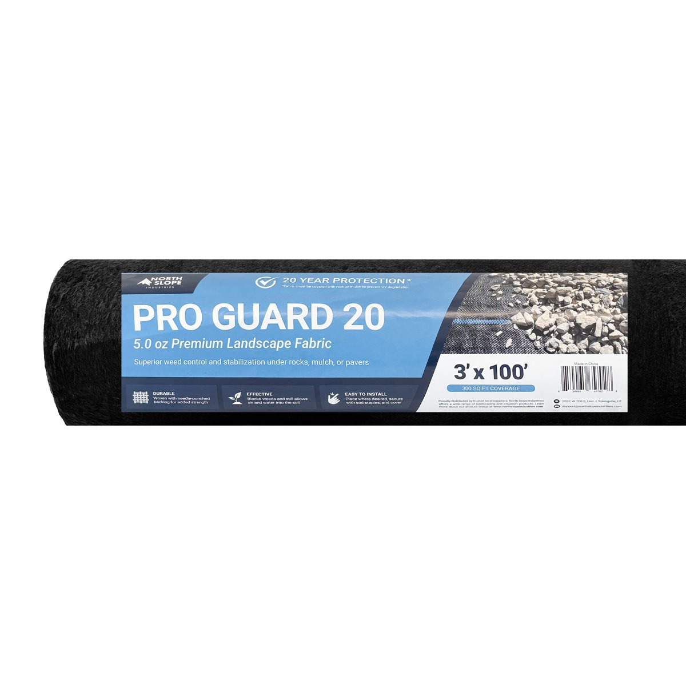
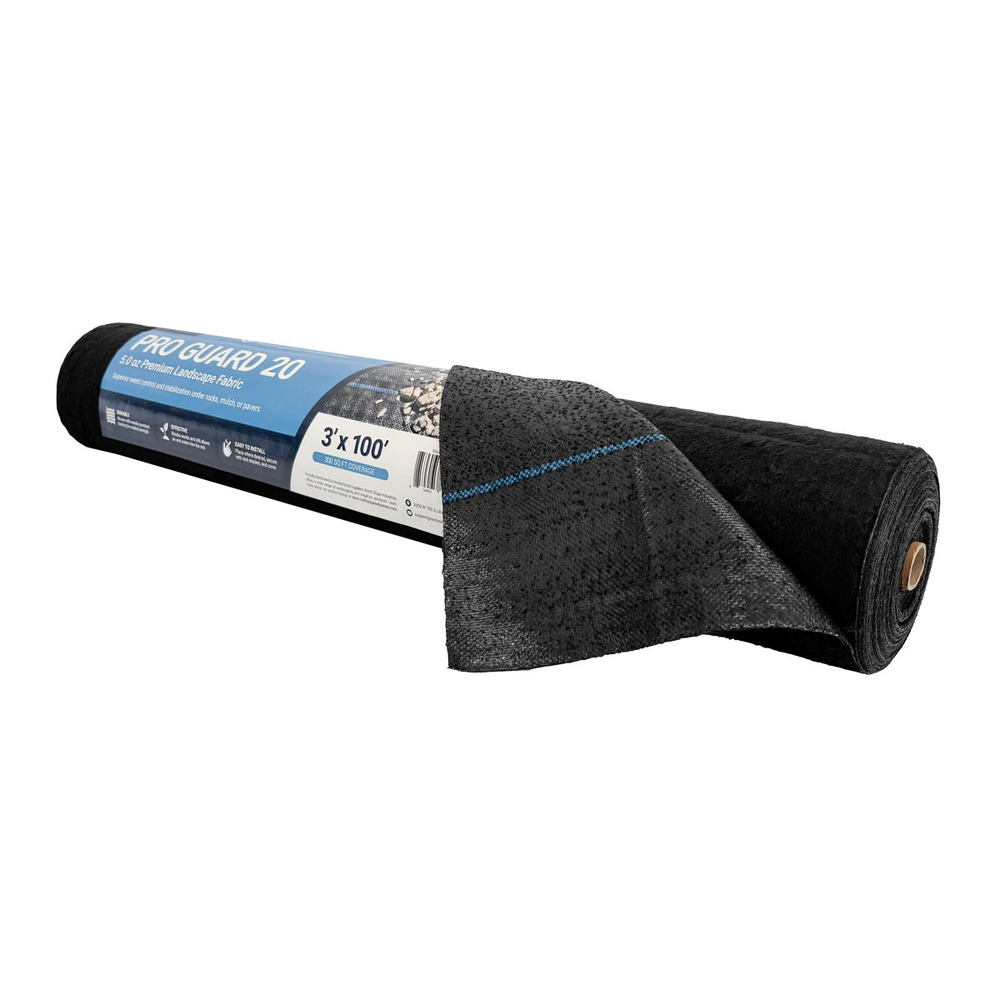
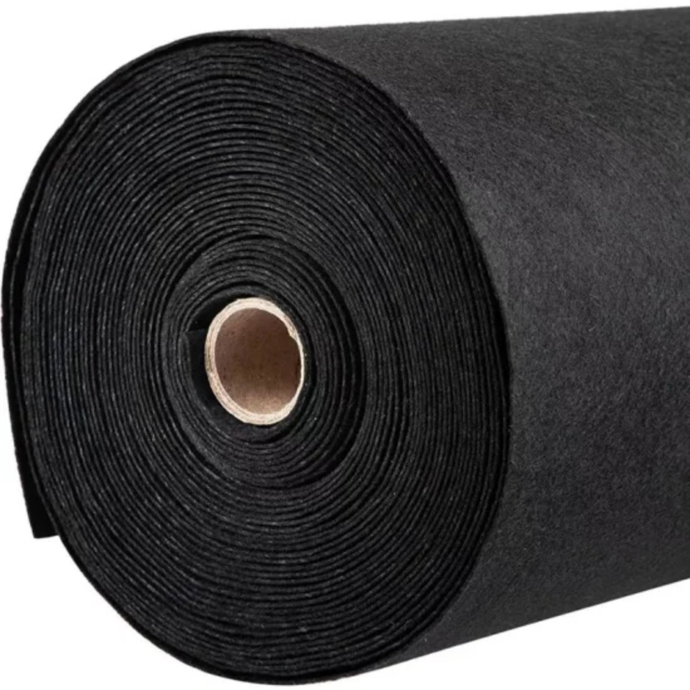
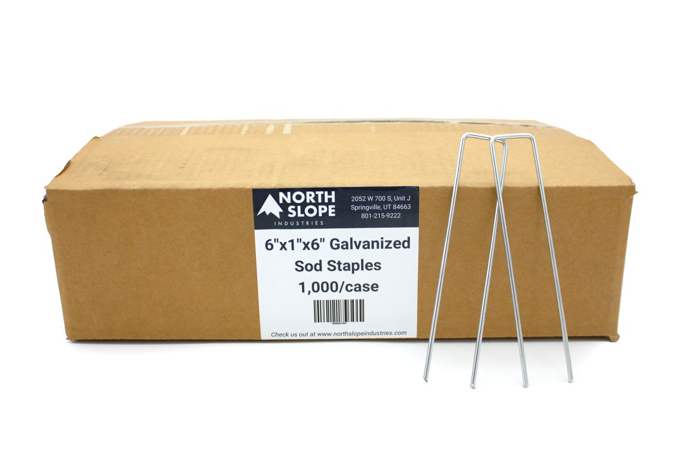

Commercial-grade geotextiles for weed control, drainage, and landscape installs, stocked in Utah.
True 5 oz per square yard woven weed barrier fabric. Needlepunched + woven construction prevents weeds from rooting into soil while maintaining high air and water permeability.


Nonwoven polypropylene geotextile that lets water through while holding soil in place. Used for erosion control, retaining walls, French drains, and road construction. Available in 4, 6, 8, and 12 oz weights.
Need a different width? Custom cuts are available.

Galvanized 6" × 1" × 6" staples for holding landscape fabric firmly in place. Made to pair with Pro Guard 20 and Nonwoven Filter Fabric. Sold 100 per bag or 1,000 per case.

| Spec | Pro Guard 20 | Nonwoven Filter Fabric |
|---|---|---|
| Type | Woven/ |
Nonwoven |
| Material | Polypropylene | Polypropylene |
| Weight | 5 oz/sq yd | 4, 6, 8, or 12 oz |
| Widths | 3' to 12' | 15' (custom widths available) |
| Lengths | 50', 100', 250' | 50', 100', 300–360' |
| Best for | Weed control | Drainage & Erosion Control |